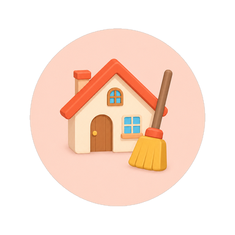
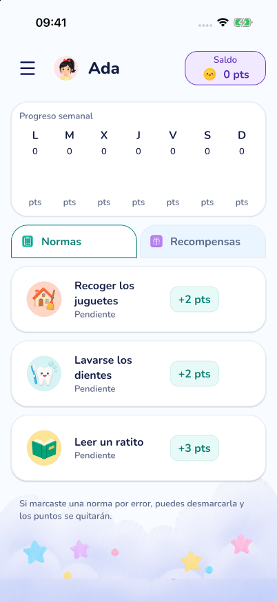
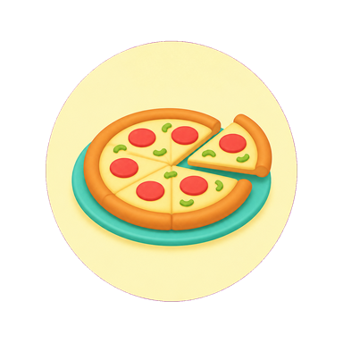
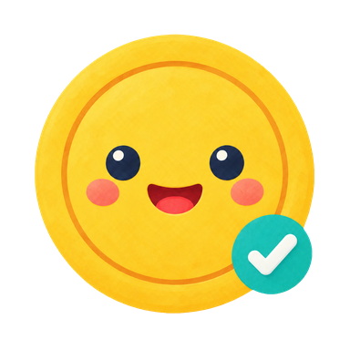
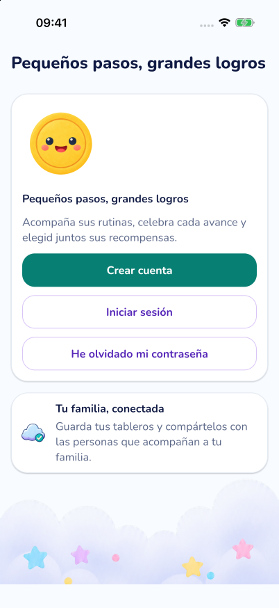
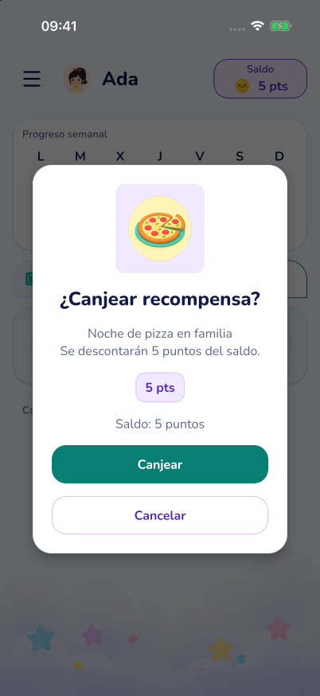
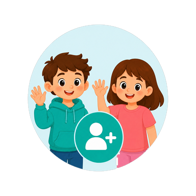

Elegid una rutina
Acordad qué queréis trabajar y cuántos puntos vale. Un tablero para cada peque, con normas que tengan sentido para vuestra familia.
PARA CRECER JUNTOS
Recoger los juguetes. Lavarse los dientes. Leer un ratito.
Con Tokenz, las rutinas se convierten en logros que podéis celebrar en familia.
Estamos preparando nuestra llegada a Google Play.

UN POQUITO CADA DÍA
No hace falta hacerlo todo de golpe. Empezad con una rutina, una recompensa y muchas ganas de acompañaros.

Acordad qué queréis trabajar y cuántos puntos vale. Un tablero para cada peque, con normas que tengan sentido para vuestra familia.
Cada norma completada suma puntos. Los pequeños avances se hacen visibles y hay una buena ocasión para decir: «¡Lo has conseguido!».

Una tarde de juegos, elegir el cuento o cocinar juntos. Canjead los puntos por algo que les haga ilusión y compartid ese momento.
UN TABLERO LLENO DE POSIBILIDADES
El mismo diseño del tablero de Tokenz. Marca una norma, mira el saldo y canjea una recompensa.
Prueba las tarjetas de este tablero.
Es solo un ejemplo con datos inventados. Puedes jugar sin crear una cuenta; al recargar, todo vuelve a empezar.
Demo interactiva · Normas y recompensas
Progreso semanal
Si marcaste una norma por error, puedes desmarcarla y los puntos se quitarán.
Canjea tus puntos por recompensas.

ASÍ ES TOKENZ
Capturas reales de la app en iPhone, con datos de ejemplo.



Cada familia, su manera.MEJOR, EN EQUIPO
Las rutinas son más fáciles de acompañar cuando los adultos comparten los mismos acuerdos. Tokenz permite invitar a otras personas a un tablero y seguir los logros juntos.
Compartir será una función Premium. Recibir y usar un tablero compartido será gratuito.
Conoce un poco másPOR SI TE LO ESTÁS PREGUNTANDO
Una app móvil de economía de fichas para familias: los adultos configuran normas, puntos y recompensas para acompañar las rutinas de sus hijos. Podéis elegir acuerdos sencillos y adaptarlos a vuestro día a día.
Todavía estamos preparando el lanzamiento en Google Play. Cuando esté disponible, añadiremos aquí el enlace oficial. Mientras tanto, puedes probar el tablero de ejemplo de esta web.
Sí. El plan Free incluirá hasta 2 hijos, 1 recordatorio por cuenta y dispositivo, y 5 normas y 5 recompensas por hijo. También podrás recibir y usar tableros compartidos. El resto de las funciones no reservadas a Premium será gratuito.
La licencia de pago único prevista ampliará los límites a 5 hijos, 5 recordatorios por cuenta y dispositivo, y 20 normas y 20 recompensas por hijo. Permitirá compartir cada tablero con hasta 5 invitados, además del propietario. El precio de lanzamiento previsto en España es 4,99 €; la app mostrará el precio de Google Play para tu región cuando se publique.
El lanzamiento está previsto sin anuncios y sin suscripción. Premium será una licencia de pago único, vinculada a la cuenta Tokenz y sin caducidad.
No. El tablero de esta web usa datos ficticios y funciona en la memoria de tu navegador. No hay registro, formularios ni conexión a una cuenta Tokenz. Al recargar la página, el ejemplo se reinicia. Puedes consultar más detalles en Privacidad de esta web.
PASITO A PASITO
Las grandes sonrisas empiezan por los pequeños logros.
Volver a probar el tablero